|
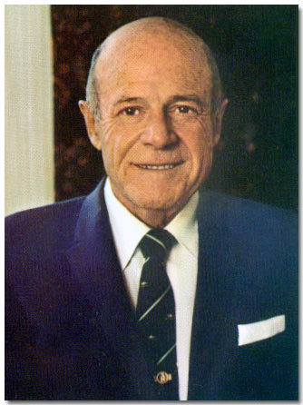 Girard Brown Henderson February 25, 1905 - November 16, 1983 Jerry
Henderson, founder of the Alexander Dawson Schools, was a philanthropist
and entrepreneur. He was fascinated by technology, education,
and innovation. |
|
| Important
Facts |
|
February 25, 1905 |
Girard Brown Henderson
was born in Brooklyn, New York. He was the son of Alexander
D. Henderson
and Ella
M. Brown.
The family residence was listed as 171 Midwood Street in Brooklyn,
New York. Source: Birth Certificate from the State
of New York. |
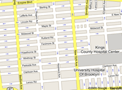 |
| March 25, 1905 | Girard Brown Henderson was baptized at the St. Matthew Church in Brooklyn. Source: Records from the Church of St. Luke and St. Matthew. | |
1905 |
His parents came to Suffern, New York as summer visitors and were boarders in a hotel downtown, which was on the property now owned by the Avon Products Company. Source: Mary's Family Connections, 1979, pg. 85. | |
1909 |
Jerry's father hired an
architect, Mr. William Hoar, to draw up plans to build a fourteen-acre
working farm and Georgian style house on the hill near the Nyack Turnpike
in Suffern, New York. A butler, household cook, cow, large vegetable
garden, lake stocked with fish, and a greenhouse, accommodated
the household. Jerry lived in this house up to the time he was married. Source:
Jerry's autobiography, So Long, It's been good
to Know You, pg. 5. |
Parents House
in Suffern, NY |
| 1910 | The 1910 U.S. Census lists the Henderson family living in Brooklyn, New York: Alexander Sr. (45) and Ella B. (42) and at their two sons, Alexander Jr. (15) and Girard B. (5). Source: 1910 U.S. Federal Census. | |
1912 |
Jerry went to the Suffern Grammar School and later went to a Catholic convent school called the Sisters of the Holy Child Jesus. Source: Jerry's autobiography, So Long, It's been good to Know You, pg. 7. |
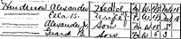 1910 US Census |
| July 1914 | When Jerry was 9, the family took a two-month vacation-business trip to buy "essential oils from the french." The family visited the oil factories that made the perfume and saw beautiful fields of flowers while they were in France. Source: Jerry's autobiography, So Long, It's been good to Know You, pg. 6. | |
1916 |
His father invested
$25,000 in the California Perfume Company, Inc. and acquired one-quarter
of the entire stock of CPC. |
|
1916 - 1923 |
Jerry was a
boarder at the Storm School, later called Storm
King School in Cornwall On Hudson, New York, which was a preparatory
school through high school. He was captain of the football team and
graduated in the class of 1923. Source: Jerry's autobiography, So
Long, It's been good to Know You, pg. 9. |
|
| February 11, 1920 | The 1920 U.S. Census lists Alexander D. Henderson (55), Ella B. Henderson (52), Alexander D. Henderson Jr. (25) and James their butler living on South Monsey Road in Suffern, N. Y. Source: 1920 US Census for Rockland County. | |
1924 |
Jerry was accepted to Dartmouth College. He only attended his freshman year. Source: Jerry's autobiography, So Long, It's been good to Know You, pg. 11. | |
January 25, 1925 |
His father, Alexander D. Henderson Sr. died in Suffern, New York after a very short illness. He was mourned by his family and associates. Source: NY Death Certificate #5375 and the Suffern newspaper. | |
| October 31, 1925 | Girard B Henderson and his mother went from New York City on the ship Reliance, to Cherbourg, France. Source: New York Passenger Lists, 1820-1957. | |
1925 |
Jerry got his first commercial job as a shipping clerk at the Cheney Silk Company in New York City at 342 Madison Avenue. He got paid $15.00 dollars a week. Source: Jerry's autobiography, So Long, It's been good to Know You, pg 12. | |
1925-1927 |
Jerry sold pots and pans of cast aluminum door-to-door for the Club Aluminum Company. He learned to cook and did cooking demonstrations in his home for groups. He even borrowed his Mother’s butler to help in these presentations. He became very successful at it. Source: Louis Kilzer of the Denver Post. | |
February
14, 1927 |
Jerry married Theodora Gregson Huntington from Spring Valley, New York, a town five miles north of Suffern. Source: Jerry's autobiography, So Long, It's been good to Know You, pg 16. | |
| February 14, 1927 | Jerry and Theodora were on a ship Veendam, from New York City. Source: New York Passenger Lists, 1820-1957. | |
March 13, 1927 |
Mrs. Ralph A. D. Preston of Mount Vernon gave a tea for Mrs. Girard B. Henderson of Spring Valley, N. Y., the former Miss Theodora Huntington of Mount Vernon. Source: ProQuest Historical Newspapers The New York Times pg. E8. | |
1928 |
Jerry took a job with a stock brokerage firm in Patterson, New Jersey at $110 a week. Source: Jerry's autobiography, So Long, It's been good to Know You, pg 16. | |
January 25, 1928 |
Theodora G. Henderson was born in Brownsville, New York. Source: Conversation with Theodora. | |
1929 |
Because of the depression
and the stock market crash, Jerry lost his brokerage job. He took a
job selling life insurance for the Phoenix Mutual Insurance Company.
He became very successful in the life insurance business. Source:
Jerry's autobiography, So
Long, It's been good to Know You, pg 17. |
|
1929 |
While working for Phoenix Mutual, Jerry learned to fly at the Newark Airport and bought a three-place, open cockpit, low-wing plane called the Nicholas-Beasley. Jerry said the plane took off at 90 MPH, flew at 90 MPH and landed at 90 MPH. He was one of the nation's earliest pilots, earning his license in 1929. This was the beginning of his romance with aviation. Source Farrow J. Smith. | |
| April 18, 1930 | The US Census lists Girard B Henderson (25 - life insurance salesman), Theodora (26), and daughter, Theodora G. (2). Source: 1930 United States Federal Census at Ho Ho Kus, Bergen, New Jersey; Roll: 1314; Page: 7A; Enumeration District: 133; Image: 54.0. | |
1930's |
Jerry flew a Stagger Wing Beechcraft airplane in the 1930's for the president of CPC, David McConnell. The company chartered the plane to transport executives going from Philadelphia and Albany on business. Source: Jerry's autobiography, So Long, It's been good to Know You, pg 22. | |
February 7, 1933 |
Dariel Henderson was born
at home in Mahwah, New Jersey. |
|
1933 |
Jerry opened the Henderson
Motor Co. in Suffern, N. Y. According to Kenneth Burnham, Jerry's
life-long friend, Jerry landed a contract to truck materials for Avon
from New York City to Suffern. |
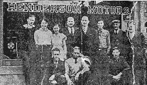 Henderson Motor Company |
| December 17, 1935 | The Alexander Dawson, Inc. was incorporated and the certificate of incorporation was filed with the Secretary of State of Trenton New Jersey. Mrs. Ella B. Henderson transferred securities she held to the company in exchange for shares in company stock. Source: ADI Certificate of Incorporation. | |
| December 18, 1935 | The first meeting between the board members of the Alexander Dawson, Inc. was held at 111 John Street, Manhattan, New York. Three directors were elected: Ella B. Henderson, Alexander D. Henderson, and Girard B. Henderson. Source: ADI Certificate of Incorporation. | |
| June 4, 1936 | At age 31, Jerry departed from St Hubert, Quebec and returned to Albany Municipal Airport, Albany, New York. He was listed on the manifest as Pilot and owner. Source: New York Passenger Lists, 1820-1957. | |
| Jan. 27, 1937 | Theodora's father, Dr. Theodore Huntington died in Mount Vernon, N. Y. Source: New York Times. | |
1930's |
Established an office and
home in Mahwah, New Jersey. After Jerry moved to California, the house
became a place for him to live during his monthly trips to his Avon
board meetings. The house had double-wall insulated construction to
provide a quiet and dark place to sleep in, and to make it as impenetrable
as possible to avoid vandalism. Source:
Conversation with Owen Patrick. |
|
1939 |
Sailed a two-masted 77 ft. schooner from New Jersey to Beaufort, South Carolina. He formed a group of Sea Scouts to patrol the Carolina coast during World War II. In Beaufort, Jerry built a house of concrete blocks, which were poured on site. According to Jerry's daughter (Terry), the doors and stain-glass windows from his parents' house in Suffern were used in this house. Alex Henderson said that Jerry also saved the wood panel walls from his mother's dinning room. The house had 7 fireplaces. Jerry bought the Laurel Hill Plantation, which consisted of approximately 200 acres and is on Lady's Island. |
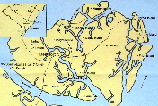 Greater Beaufort, South Carolina. |
1940 |
Jerry was elected to serve
on the board of directors for Avon Products and served for 35 years. |
|
January 17, 1940 |
Mr. Henderson's mother,
Mrs. Ella Brown Henderson died suddenly, at her home, Nyack Turnpike,
Suffern, New York. Funeral services were held at her home Jan. 19,
1940, at 2 PM. Source: ProQuest Historical Newspapers The
New York Times, pg. 23. |
|
| March 1, 1940 | A special meeting of the board of directors
for Alexander Dawson Inc. was held at room 2707, 111 John Street,
Borough of Manhattan, New York City. At this meeting it was announced, “With
deep sorrow, the death of Mrs. Ella B. Henderson on January 17,
1940, was recorded.” The board voted that Alexander D. Henderson was
elected President of the Corporation and Girard B. Henderson was
elected as Vice President and Treasurer. Source: 1940 ADI Board Minutes. |
|
| December 7, 1941 | The attack on Pearl Harbor prompted the US to declare war on Japan. | |
| 1941 | Jerry's brother, Alexander D .Henderson Jr. and wife Lucy, came to Jerry's 600 acre farm on Lady's Island. | |
| November 1, 1941 | His parents home in Suffern Park caught fire as workmen were engaged in tearing it down. The Suffern and Tallman fire departments saved the partly demolished building from complete destruction. Source: The Rockland County Journal News. | 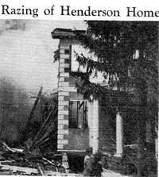 Henderson Home in Suffern |
| January 14, 1943 | The annual meeting of stockholders for Alexander Dawson Inc. was held at room 2707, 111 John Street, New York City. The minutes note a motion that was made and seconded to elect four directors for one year: A. D. Henderson, G. B. Henderson, Lucy B. Henderson, and Theodora Henderson. In addition the minutes stated the amount of shares each stockholder owned. Source: 1943 ADI Board Minutes. | |
| January 13, 1944 | The annual meeting of stockholders for Alexander Dawson Inc. was held at Colony Gardens, Beaufort, South Carolina. The minutes show that the bylaws were amended to provide that meetings of the stockholders could be held anywhere in continental United States. The Corporation accountant was noted as Mr. Adolph Manson, who prepared the 1943 balance sheet and the Profit and Loss statement. Source: 1944 ADI Board Minutes. | |
| January 9, 1945 | On of the annual meeting of stockholders for Alexander Dawson Inc. was held at Colony Gardens, Beaufort, South Carolina. The minutes state that that the Chairman announced that he and the Secretary had acted during the past year as the Executive Committee of the Board of Directors. That they had declared dividends to be paid on the preferred and common stock and had attended all the Stockholders meetings of Allied Products Inc. and Avon Products Ltd. of Canada and voted the stock held by the Corporation. The Chairman authorized G. B. Henderson to vote all the Stock held by this Corporation at such stockholders meetings. Source: 1945 ADI Board Minutes. | |
| April 30, 1945 | Girard Henderson left Toronto, Ontario and arrived in La guardia Airport, New York, New York. Source: New York Passenger Lists, 1820-1957. | |
| August 15, 1945 | Japan surrendered, ending World War II. | |
1945 |
When the war ended, Jerry
left Lady's Island in 1945 and headed for California. |
|
1947 |
Jerry bought the Melvin
Douglas house near Mission Ranch, on Dolores and Franciscan Streets,
in Carmel, California. He lived there with his wife (Theodora G. Henderson)
and his two daughters. Source: Nephew, Alexander D. Henderson's recollections. |
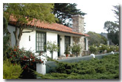 Carmel House |
1948 |
Jerry met Ruben Tice who
owned an electrical supply store in Monterey. Jerry worked for Tice
Electric "for free" where he met Owen Patrick, who worked
as a radio repair technician. |
|
1949 |
Created the Alarm
Corporation because somebody had stolen a potted geranium from Jerry's front porch in Carmel. Source: Edward M. Allen interview.
Jerry and Owen Patrick developed a burglar alarm system that would
phone the police and a prerecorded message would tell the police
that a burglar had just entered. |
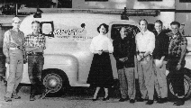 Monterey Peninsula Television (MP-TV) and crew. |
1950-1952 |
Jerry had another idea.
Television was just coming in at this time but Carmel could not get
a good picture. The Monterey Peninsula Television (MP-TV) Company
was created in Carmel, located on 7th and Lincoln Street. The company
soon provided underground cable service to Carmel residents. MP-TV
had its receiving antenna site on the high ground of Pebble Beach.
Source: Conversation with Owen
Patrick. |
|
| May 3, 1953 | Girard Henderson (48) and his wife Theodora (49) were listed as passengers arriving in the port of San Francisco on the ship, President Cleveland. Their address was listed as Mahwah, New Jersey. Source: San Francisco, California Passenger Lists of Vessels Arriving at San Francisco, 1893-1953. Micropublication M1410. Rolls # 1-429. | |
1954 |
MP-TV moved to Monterey next
to the Monterey airport. A street in Monterrey is named for Jerry called
"Henderson Way". It is near the airport and went to the MP-TV
headquarters. |
|
January, 1955 |
Girard B. Henderson and his
then wife, Theodora G. Henderson, entered into a separation agreement
looking towards a divorce. They divorced in 1960. |
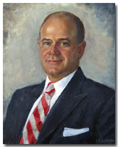 Jerry Henderson |
1957 |
Jerry created the Alexander
Dawson Foundation. It was named after his father, Alexander Dawson
Henderson. He dropped "Henderson" from the foundation's
name to deflect attention from him. The Foundation is a non-profit
organization and is dedicated to education. The mission is "to
support its educational organizations that prepare young adults to
excel in college and society by providing the highest quality academic
instruction and by developing self-respect, self-discipline and self-reliance
through hard work, personal responsibility and respect for authority. By so doing, we strive to cultivate future leaders." |
|
Jerry was commodore of
the 85-foot yacht called the Roosterfish. The yacht featured
spacious luxury for entertaining or relaxing in the "Deck House" plus
a 21" Color TV set. |
||
1958 |
Jerry met Mary Hollingsworth
around 1958. They both traveled to Colorado Springs. According to Kenneth
Burnham, Jerry was looking for a permanent place in Colorado. With Burnham's
help, they bought a 350-acre ranch at Stapps Lake near Ward, which also
became the site for Jerry's underground house. Source: Louis
Kilzer of the Denver Post. |
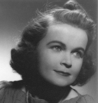 Mary Hollingsworth |
| Jerry was the second owner of Stapps Lake Ranch, which was named for the Stapps Brothers who acquired it through a Federal Land Grant signed by the then President of the U. S. The ranch had a lodge, several cabins, lakes, and acres of forestland. | ||
| Jerry and Mary had a picture taken on the tail of their Convair 580 turbo prop airplane for a Christmas card. The stencil on the tail, which stands for "Marine Corps Air Station Beaufort". The number and letters on the tail were for Mary's name and birthday, January 23. Source: Farrow J. Smith. |
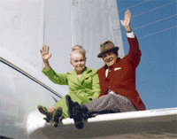 Jerry & Mary
on |
|
June
5, 1964 |
Jerry Henderson married
his 2nd wife, Mary Hollingsworth in Clark, Nevada. Source:
Louis Kilzer of the Denver Post; Nevada Marriage Index, 1956-2005. |
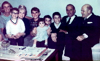 Alexander D. Henderson III"s Family |
1964 |
Jerry and Mary visited Jerry's
nephew, Alexander D. Henderson III, and his family in Fort
Lauderdale, Florida. He also brought the Roosterfish yacht to Florida
and took the family for a ride. |
|
1964 |
Jerry built and lived in an elaborate underground house on his 320-acre mountain property near Boulder, Colorado. There was a helicopter pad on top for quick getaways. The house was completely underground and included 4 bedrooms, a swimming pool, and murals of San Francisco and New York. The murals painted done by Jewell Smith. | 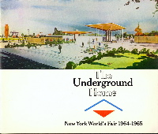 Multi-section foldout describing The Underground Home New York World's Fair 1964-1965 |
1964-1965 |
Jerry pioneered underground living and sponsored The Underground Home exhibit at the New York World's Fair. The exhibit covered such topics as Why live underground? and How to build underground. The underground home had a garden, terrace, wood floors, with a living room and three bedrooms. The Underground World Home Corporation was located in Mahwah, New Jersey. Source: The Underground World Home by Bill Cotter. | |
1964-1968 |
In 1964, Jerry got involved in the Blue Channel seafood company in Port Royal, SC and acquired full ownership in 1968. Sterling Harris, the founder and president, was looking for financial assistance and contacted Jerry in California. They had become acquainted while Jerry was living in Beaufort during WW II. Source: Farrow J. Smith. |
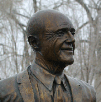 Jerry Henderson Bronze Statue |
| June 9, 1966 | G. B. Henderson sold 271,455 capital shares of Avon Products, reducing his indirect holdings to 1,035,410 shares. Source: ProQuest Historical Newspapers The New York Times, pg. 96. | |
1967 |
Jerry's Foundation established
the Colorado Junior Republic School (CJR) at Stapps Lake, Colorado.
The school started as a summer school for underprivileged children.
It was later expanded into a year-round school, and then converted
to a college preparatory program. |
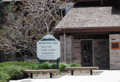 Henderson Hall Alexander Dawson School in Colorado |
| Jerry became interested in the Pritikin Health Diet and this building was called the Colorado Health Education Center (CHEC). It had a staff of doctors, lab for blood work, etc. They had classes on food preparation and the proper diets, etc. Following Jerry's death, this was closed and converted to school use. The campus is approximately 77 acres. Source: Farrow J. Smith. | ||
December 1, 1968 |
His brother's wife, Lucy
E. Henderson donated money to build the, Alexander D Henderson University School in Boca Raton, Florida. |
|
1969 |
Jerry moved his headquarters from Mahwah, N. J. to Las Vegas, Nevada. Source: Farrow J. Smith. |
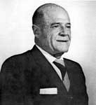
|
1969 |
Theodora Holding Corp. v. Henderson suit was brought by the Theodora Holding Co., regarding a contribution to the Dawson Foundation of an ADI share worth $528,000, asking for an accounting by the individual defendants. | |
| November 21, 1969 | G. B. Henderson, a director of Avon Products, sold 228,981 shares, leaving him with 570.229. Source: ProQuest Historical Newspapers The New York Times, pg. 78. |
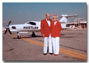 Jerry & Mary
in front of their |
| 1970 | The school moved to Lafayette. Colorado, where construction began on several new buildings. | |
1971 |
Jerry built a home in Las
Vegas that was partially underground. It later became the office for
ADI. Source:
Farrow J. Smith. |
|
August
13, 1973 |
In 1973, Jerry and four
others flew to Europe on his King Air 300 airplane. For safety reasons,
they made refueling stops half the range of the airplane. They started
August 13, 1973 and returned home August 25, 1973. They started in
Denver, Colorado with the following stops: Montreal, Canada (where
we met up with Lucy and Tex); Sept-Îles,
Canada; Frobisher Bayand Baffin Island, Canada; Søndre
Strømfjord, Greenland (where they had to chase a caribou off
the runway so they could land); Reykjavík, Iceland; Inverness,
Scotland; Zürich, Switzerland; Naples and the Isle of Ischia,
Italy. Source: Farrow
J. Smith. |
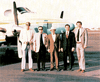 Trip to Europe Kingair 300 airplane Bill Falconer, Mario Borini, Jerry Henderson, Farrow Smith, Oz Gutsche |
| August 25, 1973 | The return trip was from Frankfort, Germany; Hanover, Germany (where Jerry met with Dr. Hans Nieper who was in alternative medicines such as Laetrile and had cured Mary of throat cancer after M D. Anderson Hospital in Houston had given up); Dundee, Scotland; Reykjavík, Iceland; Narssaq, Greenland; Sept-Îles, Canada, New York City (to drop off Mario Borini); Denver, and home to Las Vegas. Source: Farrow J. Smith. | |
October 2, 1973 |
An Article appeared in the New York Times, which said: "Girard B. Henderson, a director, made a series of small trades in March and April, catching the top of the Avon market with a 400-share trade at 140 on March 7th." Source: ProQuest Historical Newspapers The New York Times pg. 60 |
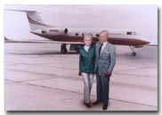 Jerry & Mary
in front of their |
1975 |
Jerry built the Alexander
Dawson Building, an office complex on 4045 Spencer Street and Flamingo
Road in Las Vegas, Nevada. It
was later expanded and renamed as the Dawson Buildings. Source:
Southern Nevada Geographic Information System. |
|
| ADI leased the entire bottom floor to the Summa Corporation, which was owned by Howard Hughes. They liked it for security reasons. | 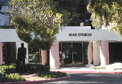 The Dawson Buildings 4045 Spencer St. |
|
1975 |
Mr. Henderson retired as
a member of the Avon Board of Directors. In his 35 years on the board,
he participated in many important, far-reaching decisions, which helped
shape Avon. |
|
1978 |
Jerry bought and became
chairman of Gulfstream American Aviation, the manufacturer of the
Gulfstream jet series. |
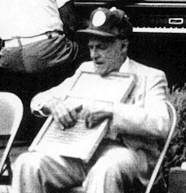 Jerry playing the Wash Board |
1978 |
Jerry
played the Wash Board with the Grizzly Rider band in Missoula,
Montana. He
was a member of the Grizzly Riders, which was part of a Foundation
associated with the University of Montana. They would camp
and ride in the wilderness for several days each year and would
invite alumni and supporters. Jerry was also a member of the Roundup
Riders of the Rockies in Colorado. Source:
Farrow J. Smith. |
|
1978 |
Jerry built a 6,000 square
foot luxurious underground home near the Alexander Dawson buildings
in Las Vegas where he lived. You took an elevator down into the underground
home 25 feet below ground. There was a main house, heated swimming
pool with cascading waterfall, a guesthouse and "outdoor" walkways.
It had a remote-controlled lighting system, which could turn a starry
night sky into a beautiful sunrise - all with a push of a button!
The underground home was featured on the Travel Channel in 2003. Jewell
Smith painted the murals. |
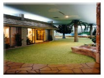 Jerry's underground
house in |
| 1979 | Jerry bought the Cecil Peak Station, which is on Lake Wakitipu across from Queenstown, New Zealand. The only access was by boat or small airplane. Jerry's built an octagon shaped house on the Cecil Peak Station prior to ADI acquiring it. To get around a law, that a foreigner could not own a permanent home, the house was built on skids and was not attached to pillars. The property was sold in 1986. |
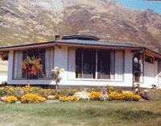 Cecil Peak
Station |
August 1979 |
Jerry's grandnephew, Greg
Henderson and his wife visited Jerry in Las Vegas. Jerry came to the
airport to pick them up in his white Cadillac. They had dinner and went
to a Las Vegas show. The couple spent the night in the guest house in
the underground home. Going to San Francisco the next day on business,
Jerry offered to fly Greg and his wife back home. They flew back on
Jerry's Citation II jet. |
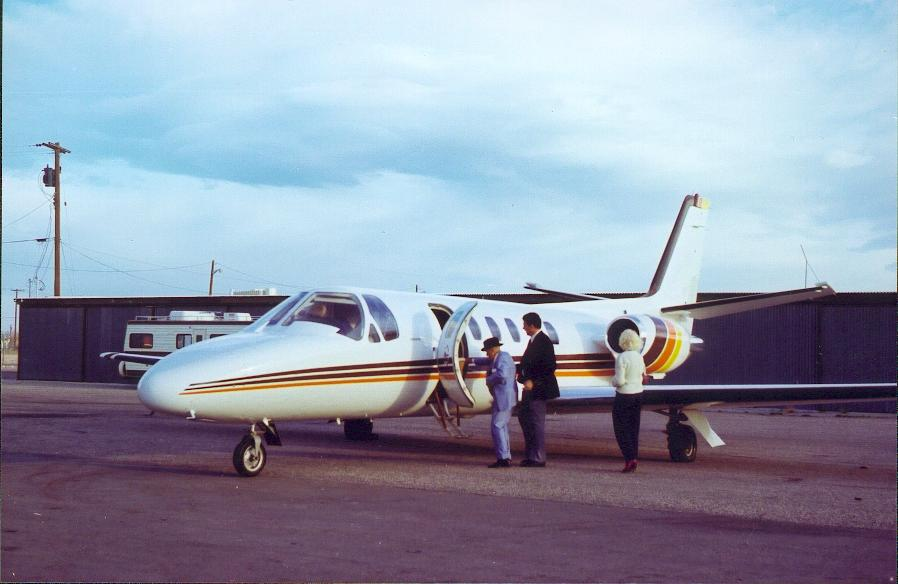 Jerry takes
nephew home on a |
1979 |
Henderson's first wife, Theodora
Henderson died in New York. |
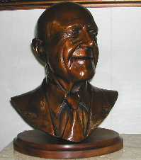 Bust of G. B. Henderson |
| 1980 | The school changed its name to Alexander Dawson School after Henderson's father, Alexander Dawson Henderson. A speech was given about Jerry, given by the chairman at the school's 30th anniversary celebration. | |
1981 |
Jerry wrote the book Turn
the Clock Back Sam, which is about having less federal government
and fewer taxes. Jerry's long time friend, Norman Vincent Peale,
wrote the Foreword to the book. |
|
1981 |
Jerry's daughter, Dariel
Henderson, died in Washington State. |
|
November 16, 1983 |
At age 78, Girard B. Henderson
died in Las Vegas, Clark, Nevada of a heart attack. Source:
Social Security Death Index. |
|
November 18, 1983 |
Services were held at the
Palm Valley View Chapel in Las Vegas and also at the Laurel Hill Plantation
near Beaufort, South Carolina. Jerry Henderson is buried inside a
chapel on a one-acre plot of land on Laurel Hill Plantation, which
is in the name of the Alexander Dawson Foundation. On the bottom of
Jerry's headstone reads: "If your hands are clean your cause
is just, and if your request is reasonable you cannot be denied." |
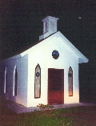 Jerry's Chapel |
October
15
1988 |
The Sacred Mountain Ashram
bought the Stapps Lake Ranch. Source: Nederland Reality. 10-15-88. |
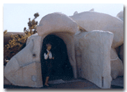 Donna Henderson at Jerry's underground house in Las Vegas |
March 31, 1999 |
The Alexander Dawson Foundation built a private $22 million Alexander Dawson School in Las Vegas, Nevada. The school offers a rigorous, traditional liberal arts curriculum. Click here to see newspaper article. |
> 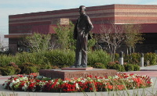 Alexander Dawson School in Las Vegas |
2000 |
The Alexander Dawson School in Las Vegas is located at 10845 West Desert Inn Road, Las Vegas, Nevada. The Board of Trustees of the Alexander Dawson Foundation governs the Alexander Dawson School. |
|
2003 |
Trustees of the philanthropic
Alexander Dawson Foundation continue to run the Alexander Dawson Schools
from the Dawson Buildings at 4045 South Spencer Street in Las Vegas,
Nevada. |
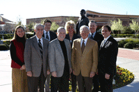 School board in Las Vegas Back row: Oz Gutsche and John O'Brien. Front row: Farrow Smith, Mario Borini, Charles Silvestri and Joe Borini |
June 20, 2003 |
Jerry's grandnephews, Greg and Scott Henderson visited the Dawson Buildings. |
|
| July 24, 2003 |
An article in the Las Vegas Mercury appeared entitled Tales of Vegas Past: Going underground. | |
| January 25, 2005 | The Dawson schools celebrated the 100th anniversary of Jerry's birthday at the School in Colorado. | |
Other points of interest:
Other business ventures by Jerry Henderson:

Last update: Tuesday, March 3, 2026